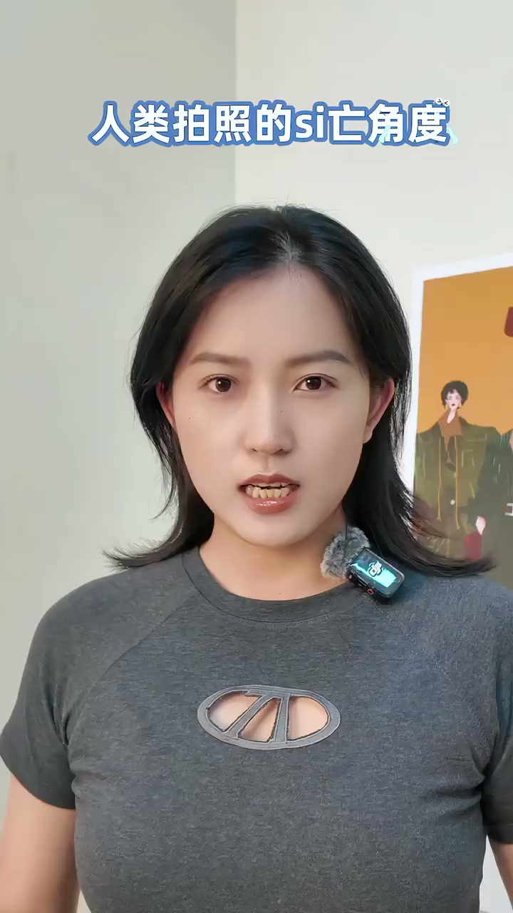
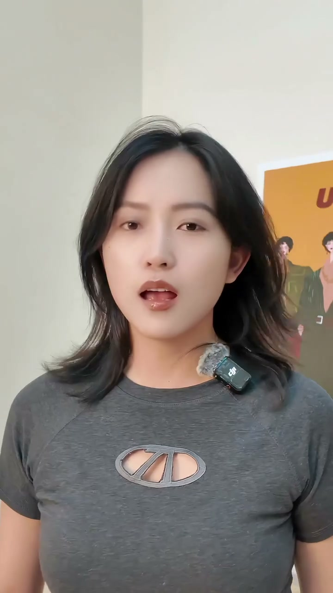
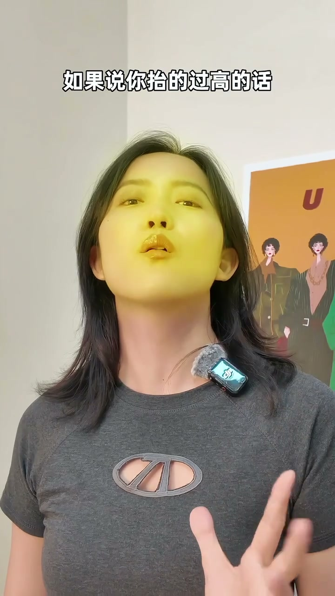
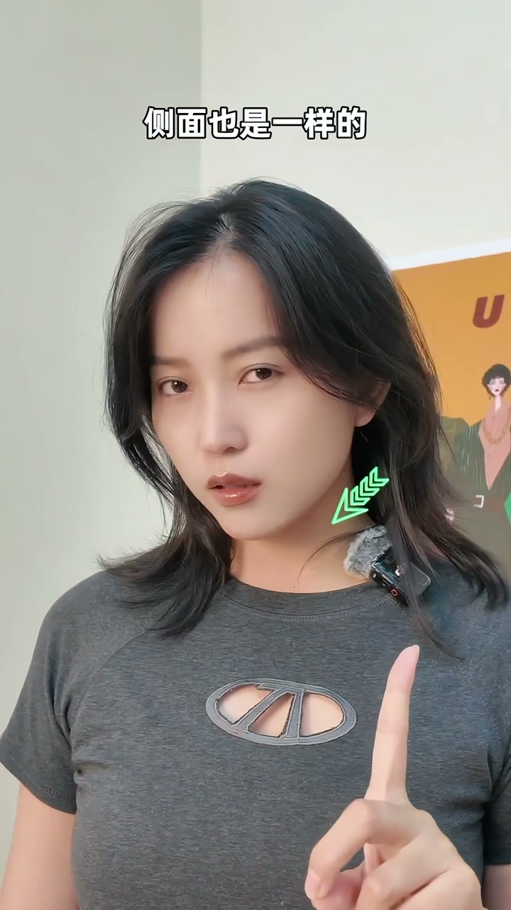
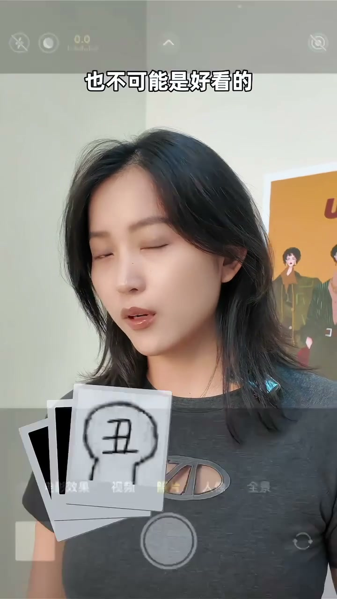
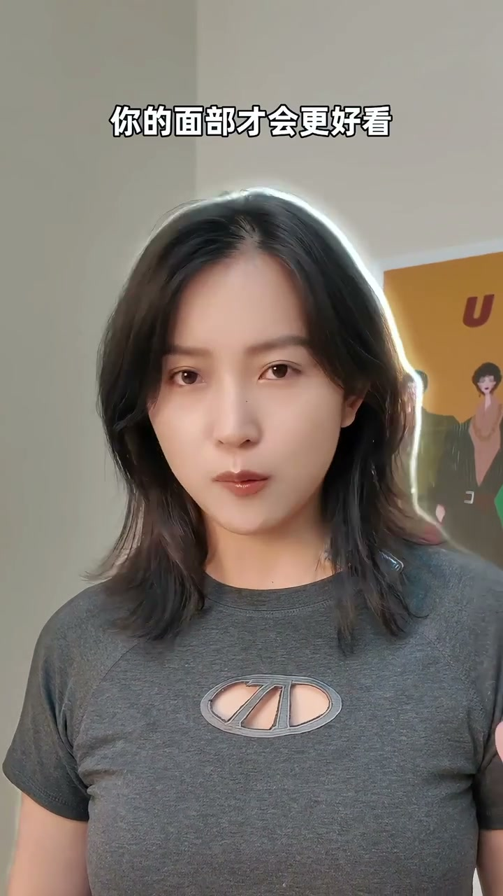
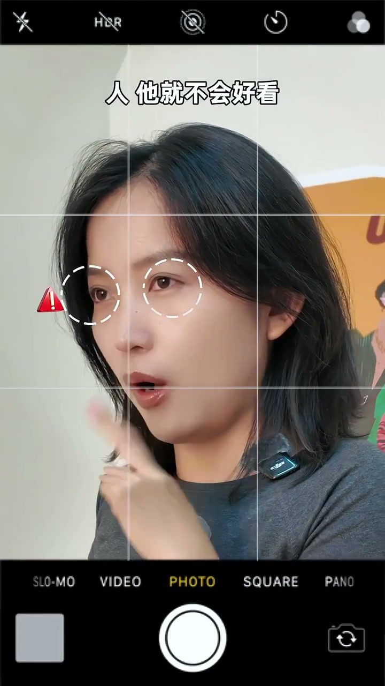
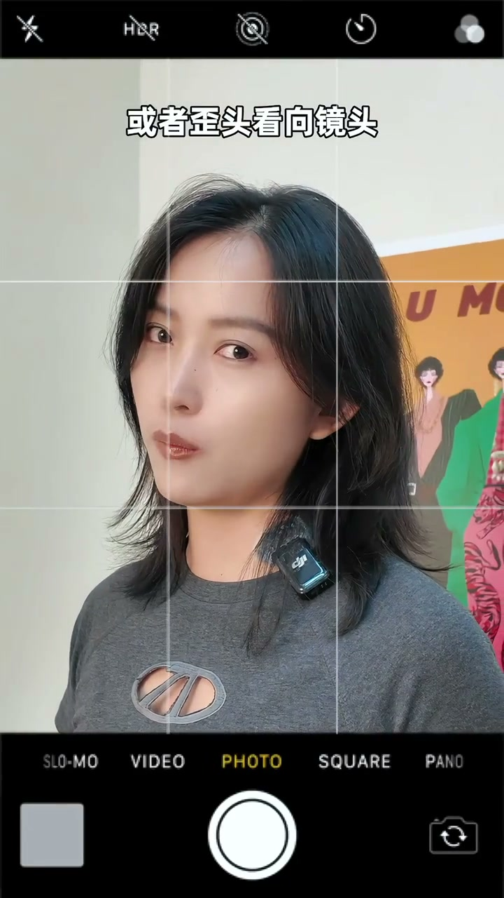

内容要点
[00:00] 人类拍照的死亡角度
[00:02] 不要抬高
[00:03] 低头 双下巴
[00:04] 翻白眼
[00:06] 还有抬头蚊
[00:07] 要么就是把脸移得太侧
[00:10] 这样的话都是不对的
[00:11] 我们照相的时候要记得
[00:13] 抬脸的时候只需要把我们的下巴抬高20度
[00:16] 微抬一点点就可以了
[00:18] 这个样子的话
[00:18] 你的面部它是平整的
[00:19] 如果说你抬得过高的话
[00:21] 就显得你的面部一点都不立体了
[00:23] 皮肤也会显得很大
[00:24] 脸也会显得很平
[00:25] 那OK
[00:25] 那接下我们低头的时候
[00:27] 也是微低个20度
[00:28] 侧面也是一样的
[00:31] 两边都是微侧
[00:32] 尽量保持在45度以内
[00:34] 你看如果说我的眼睛看像镜头
[00:36] 我的脸侧侧侧侧那么多
[00:38] 我的眼睛看着镜头很难受
[00:39] 这样的话我穿在照片里
[00:40] 可能是好看的
[00:41] 那45度以内
[00:42] 你可以让自己45度角
[00:44] 30度角或者15度角
[00:46] 那这个样子脸
[00:47] 微微的去移中
[00:49] 微微的去抬
[00:50] 这个样子你的面部才会更好看
[00:52] 那我们转向侧面的时候也是一样的
[00:54] 侧面的时候要注意一个点
[00:56] 眼睛千万不要说
[00:57] 当相机在这边手的眼睛
[00:59] 跟它在反方向的去看
[01:00] 这样的话你的眼白就会过多
[01:02] 人它就不会好看
[01:03] 你的脸要注意
[01:04] 你的脸转向哪一个角度
[01:07] 眼睛就跟你转向的角度
[01:09] 平视过去
[01:11] 可以选择微抬
[01:12] 平视或者说微低
[01:15] 或者歪头看像镜头
[01:19] 但是不要这样
[01:20] 这样就歪太多了
[01:21] 所以说角度一定要学会去控制好来
[01:23] 它都是微微的去周转
[01:26] 而不是说
[01:26] 大幅度大幅度大幅度的去周转
[01:38] OK 记得了吗







